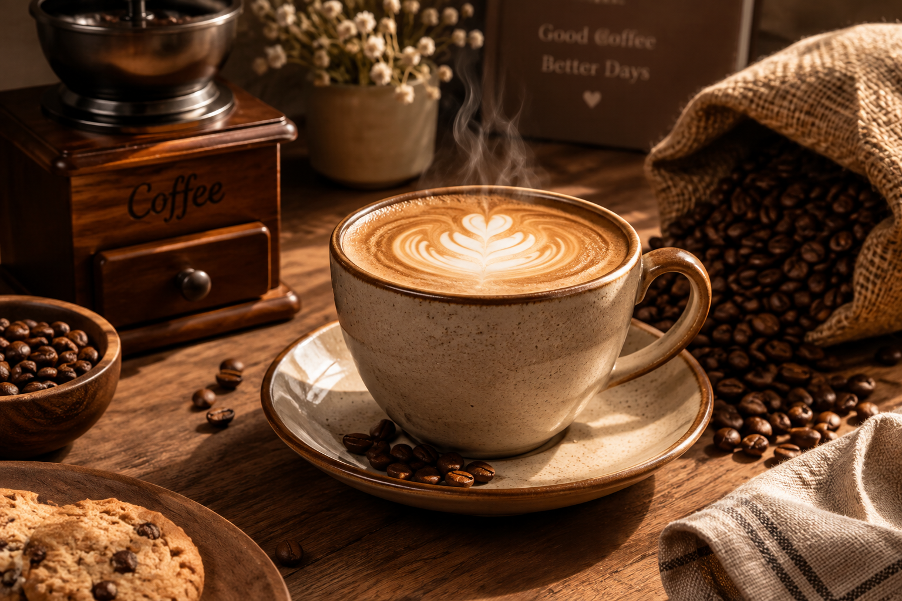

Our mission
To serve consistently great coffee while creating a welcoming experience for our customers.
OUR STORY
We believe the best coffee moments are the ones shared.

WHO WE ARE
Brew & Bean is a friendly coffee shop built around fresh coffee, simple food and memorable moments. We aim to provide quality, comfort and great value to everyone who walks through our doors.
Our idea is simple: serve consistently great coffee and make every guest feel welcome, whether they are stopping by for a quick takeaway or settling in for a catch-up.
WHAT MATTERS TO US
To serve consistently great coffee while creating a welcoming experience for our customers.
To become a trusted local coffee destination known for warm service and excellent drinks.
Quality, warm hospitality, freshness, creativity and community guide the way we work.
A FEW QUICK ANSWERS
Our menu features coffee, pastries and cakes. Visit the menu page for the current selection.
Yes. Complete the order enquiry form with your items, quantity and preferred collection date. We will review your request and confirm availability.
Our stated business address is 123 Coffee Street, Polokwane. Please contact us to confirm directions before visiting.